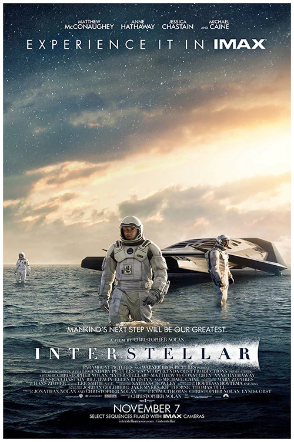

Paul arrives on Arrakis after his father accepts the
stewardship of the dangerous planet. However, chaos ensues after
a betrayal as forces clash to control melange, a precious
resource.
Book NowMore Info
Midsommar
Dani's psychological trauma affects her relationship with
Christian, her lover. However, when they visit their friend's
ancestral commune in an effort to mend things, it changes their
lives forever
Book NowMore Info

Interstellar
When Earth becomes uninhabitable in the future, a farmer and
ex-NASA pilot, Joseph Cooper, is tasked to pilot a spacecraft,
along with a team of researchers, to find a new planet for
humans.